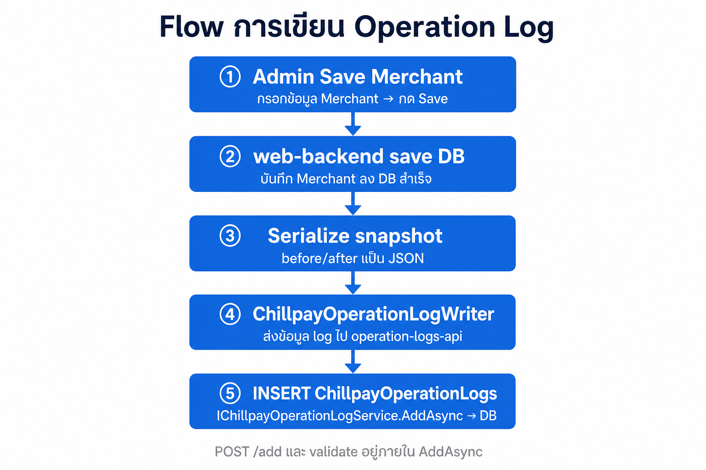
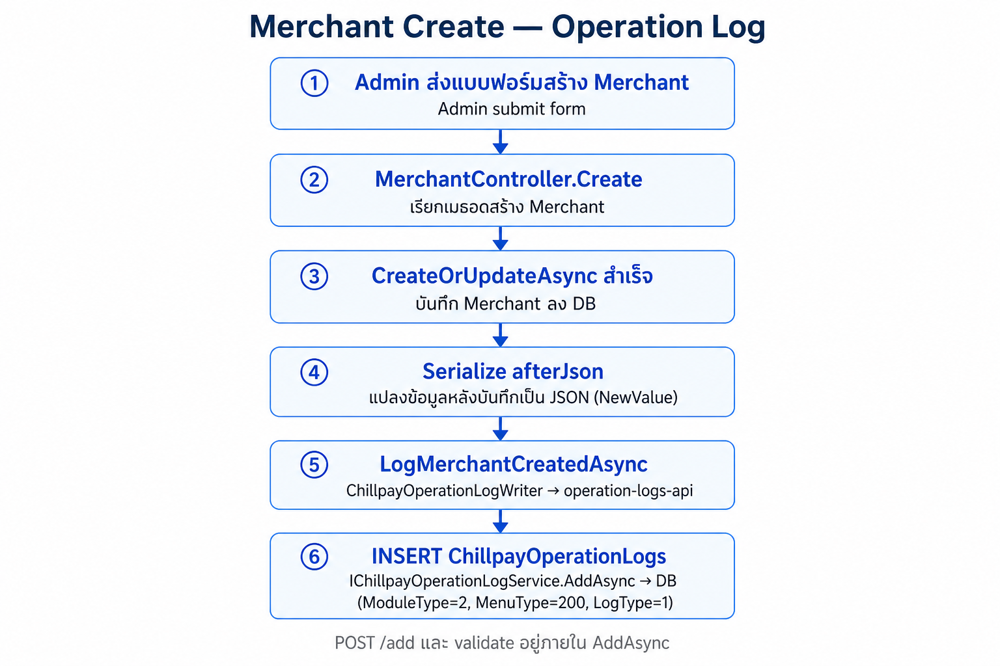
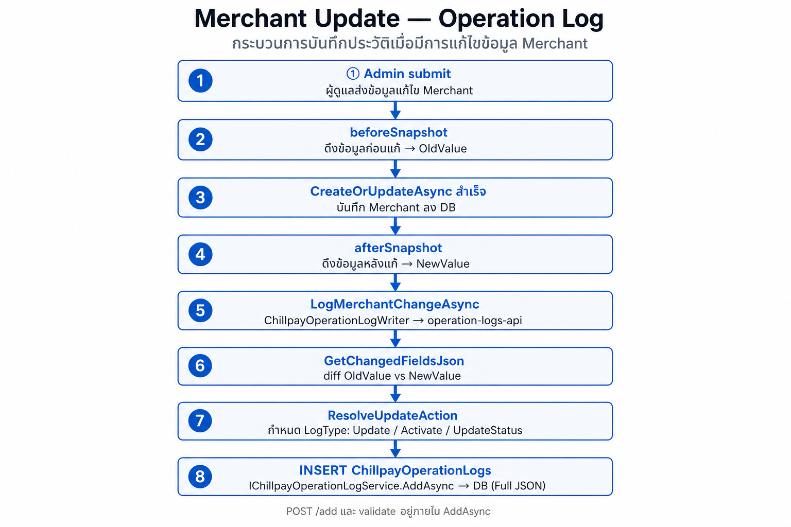

เอกสารอ้างอิงหลัก · รวม registry, UI, API, writer, SQL script (§7.4)
สถานะ: Phase 1 code พร้อม — รอ deploy + smoke test
อัปเดต: 2026-06-28
ขอบเขต: Admin UI (web-backend) + Operation Logs API + Registry Module 1–14
Chillpay Operation Logs เป็น registry กลาง สำหรับบันทึกการเปลี่ยนแปลงข้อมูลบน Web Admin แยกจาก PayOut โดยใช้โครงสร้าง ModuleType → MenuType → LogType (Action) + Ref
| หัวข้อ | สถานะ / แนวทาง |
|---|---|
| โครงสร้าง Registry | คง Module / Menu / LogType / Ref — ไม่เลียนแบบ Payout ทั้งหมด |
| หน้า List | Browse ด้วย Module + Menu + Log Type + Merchant + วันที่ — ลบ LogMode 2–9 แล้ว |
| ปุ่ม Logs บน Detail | ใช้ — deep link ไปหน้า List (ส่ง menuType + dataId โดยตรง ไม่ใช้ LogMode เดิม) |
| OldValue / NewValue (Update) | snapshot JSON เต็ม — diff ใช้เฉพาะตัดสิน Action type |
| เมื่อไหร่เขียน Log | เฉพาะเมื่อรายการนั้น success (Create/Update/Delete ผ่าน) — fail แล้วไม่เขียน |
| API | Search หลัก POST /search (List) · Writer POST /add · Detail GET /{id} · Integration POST /search/menu — ดู §6 |
| Deploy | ⏳ รอ SQL + API + web-backend ทุก env |
| # | งาน | Repo |
|---|---|---|
| 1 | API Search / Add / FindById (.NET 8) | operation-logs-api |
| 2 | SQL ChillpayOperationLogs + view VW_ChillpayOperationLogs (script ใน §7.4) |
operation-logs-api |
| 3 | Registry Module 1–14 (Merchant=2, Settings=3) | operation-logs-api + web-backend |
| 4 | Writer Merchant + Settings (บางเมนู) | web-backend |
| 5 | หน้า List ChillpayOperationLogs.cshtml |
web-backend |
| 6 | หน้า Detail ChillpayOperationLogsDetail.cshtml |
web-backend |
| 7 | Menu dropdown บนหน้า List | web-backend |
| 8 | ปุ่ม Logs + _ChillpayOperationLogButtonPartial (~15 หน้า) |
web-backend |
| 9 | Deep link localStorage.ChillpayLogSearchData (menuType + dataId) |
web-backend |
| 10 | OldValue/NewValue ตอน Update = snapshot เต็ม | web-backend |
| 11 | AjaxChillpayOperationLogsController ส่ง DataId ไป API |
web-backend |
ModuleType (1–14) ← หมวดใหญ่ = sidebar Admin (Merchant, Settings, …)
└── MenuType ← หน้าย่อยที่เขียน log ได้ (Fee, Route, Payment Channel, …)
└── LogType ← action ที่เกิดขึ้น (Create, Update, Delete, …)
└── DataId + RefType/RefId (+ Ref2) ← entity ที่ถูก action
ทำไมแยก 3 ชั้น?
| ชั้น | ตอบคำถาม | ตัวอย่าง |
|---|---|---|
| ModuleType | log นี้อยู่ หมวดไหน ของ Admin? | 2 = Merchant |
| MenuType | log นี้มาจาก หน้า/เมนูไหน? | 202 = Merchant Fee |
| LogType | ทำอะไร กับ record นั้น? | 2 = Update |
แยกจาก PayOut ที่ใช้ LogType เป็นช่วงเลขแทน Menu — แบบ Chillpay map กับ sidebar Admin ได้ตรง
ModuleType = ลำดับ module ตาม sidebar Web Admin — กำหนดใน enum ChillpayOperationLogModuleType (OperationLogConstants.cs)
public enum ChillpayOperationLogModuleType
{
User = 1,
Merchant = 2,
Settings = 3,
Transactions = 4,
Settlements = 5,
ManageTransaction = 6,
PayLink = 7,
Fraud = 8,
Etax = 9,
OddService = 10,
ChillAppPartner = 11,
Wallet = 12,
Recurring = 13,
Commission = 14,
}
บนหน้า List: dropdown Module — เลือกหมวดเดียว หรือ Select All (ค้นทุก module ที่เปิดใช้)
MenuType = หน้า Admin ที่มี operation log (create / update / delete ฯลฯ) — กำหนดใน enum ChillpayOperationLogMenuType (OperationLogConstants.cs)
public enum ChillpayOperationLogMenuType
{
// Module 1 — User
Account = 101,
Role = 102,
// Module 2 — Merchant
Merchant = 200,
MerchantUser = 201,
MerchantFee = 202,
MerchantRoute = 203,
MerchantServiceFee = 204,
GenerateMerchantKeys = 205,
MerchantEmails = 206,
// Module 3 — Settings
PaymentChannel = 300,
PaymentRoute = 301,
PaymentRouteInquiry = 302,
CreditCardConfig = 303,
SwitchPaymentRouteChannel = 305,
ChillPayMaintenance = 306,
BankMaintenance = 307,
BankPaymentApiSetting = 308,
SMSRoute = 309,
ExchangeRate = 310,
ExchangeRateLog = 311,
// Module 4 — Transactions
Payment = 401,
Void = 402,
RefundOld = 403,
RefundTransaction = 404,
ApproveRefund = 405,
SettlementOld = 406,
PaymentSummaryOld = 407,
ImportMcc = 408,
InquiryTransaction = 409,
WarningTransaction = 410,
// Module 5 — Settlements
SettlementDashboard = 501,
Settlement = 502,
SettlementUploadFile = 503,
SettlementMerchantTransfer = 504,
SettlementMerchantSetting = 505,
SettlementStatus = 506,
DownloadPaymentSummary = 507,
// Module 6 — Manage Transaction
UpdateTransactionStatus = 601,
UpdateSettlementStatus = 602,
UpdateTransferDate = 603,
// Module 7 — PayLink
PayLinkLink = 701,
PayLinkTransaction = 702,
// Module 8 — Fraud
FraudCreditCardTransactions = 801,
FraudObserveConfiguration = 802,
FraudObserveTransactions = 803,
FraudAlertConfiguration = 804,
FraudAlertTransactions = 805,
// Module 9 — Etax
EtaxMerchantProfile = 901,
EtaxEndUserProfile = 902,
EtaxSaleManage = 903,
EtaxUploadSettlement = 904,
EtaxUpdateSettlement = 905,
EtaxSettlementPayOut = 906,
EtaxInvoiceMerchant = 907,
EtaxInvoiceEndUser = 908,
EtaxInvoiceTransactions = 909,
EtaxPnd = 910,
EtaxInvoiceAbbTransactions = 911,
EtaxOutstandingInvoice = 912,
EtaxCancelInvoice = 913,
EtaxCreditNote = 914,
EtaxDebitNote = 915,
EtaxCreditNoteInvAbb = 916,
// Module 10 — Odd Service
OddRoute = 1001,
OddMerchantRoute = 1002,
OddRegister = 1003,
OddBayConfigs = 1004,
OddBayCustomer = 1005,
OddScbConfigs = 1006,
OddScbCustomer = 1007,
OddKtbConfigs = 1008,
// Module 11 — Chill App Partner
ChillAppMembers = 1101,
ChillAppTransactions = 1102,
ChillAppPartners = 1103,
ChillAppPayTransactions = 1104,
ChillAppSettlementPayTransactions = 1105,
// Module 12 — Wallet
WalletMerchant = 1201,
WalletShopSendMoneyFee = 1202,
WalletTransaction = 1203,
WalletSettlementTransaction = 1204,
WalletSettlementReport = 1205,
WalletSettleVersion = 1206,
// Module 13 — Recurring
RecurringMerchant = 1301,
RecurringSchedule = 1302,
RecurringTransactions = 1303,
// Module 14 — Commission
CommissionReseller = 1401,
CommissionResellerPayout = 1402,
CommissionReports = 1403,
CommissionDownloadReports = 1404,
}
บนหน้า List: dropdown Menu — แสดงเมื่อเลือก Module แล้ว; Select All = ไม่ส่ง menuType (ได้ทุกเมนูใน module)
ปุ่ม Logs: ส่ง menuType จริง (เช่น 202) แทน LogMode เดิม (เช่น mode 3) — ไม่สับสน
LogType = action กลาง ใช้ร่วมทุก module — ไม่ใช่ชื่อเมนู — กำหนดใน enum ChillpayOperationLogActionType (OperationLogConstants.cs)
public enum ChillpayOperationLogActionType
{
Create = 1,
Update = 2,
Activate = 3,
Inactivate = 4,
Delete = 5,
Restore = 6,
Generate = 7,
UpdateStatus = 8,
Approve = 9,
Reject = 10,
Enable = 11,
Disable = 12,
Cancel = 13,
Refund = 14,
Void = 15,
Reprocess = 16,
Retry = 17,
Import = 19,
Upload = 20,
Login = 22,
Logout = 23,
ResetPassword = 24,
Assign = 25,
Unassign = 26,
Hold = 27,
Release = 28,
Offset = 29,
Transfer = 30,
}
บนหน้า List: dropdown Log Type — filter ตาม action; รายการที่แสดงขึ้นกับ Menu ที่เลือก (แต่ละเมนูอนุญาต action ไม่เหมือนกัน เช่น Generate Keys มีแค่ action 7)
การตัดสิน LogType ตอน Update (Writer):
beforeSnapshot / afterSnapshot เต็มGetChangedFieldsJson → diff เฉพาะ field ที่เปลี่ยนChillpayMerchantOperationLogResolver.ResolveUpdateAction(menuType, diff) → เลือก Update / Activate / UpdateStatus| Field | ความหมาย | ตัวอย่าง (แก้ Fee id 501 ของ merchant 100) |
|---|---|---|
| DataId | id หลักของ record ที่ถูก action | 501 |
| RefType | ประเภท entity หลัก | 10002 (Merchant Fee) |
| RefId | id ของ entity หลัก | 501 |
| Ref2Type / Ref2Id | entity ที่เกี่ยวข้อง (มักเป็น merchant) | 10000 / 100 |
RefType = ประเภท entity (ไม่ใช่หน้าเมนู) — กำหนดใน enum ChillpayOperationLogRefType (OperationLogConstants.cs)
public enum ChillpayOperationLogRefType
{
Undefined = 0,
// Merchant (10000+)
Merchant = 10000,
MerchantUser = 10001,
MerchantFee = 10002,
MerchantRoute = 10003,
MerchantServiceFee = 10004,
MerchantEmail = 10005,
// Settings (20000+)
PaymentChannel = 20000,
PaymentRoute = 20001,
PaymentRouteInquiry = 20002,
CreditCardConfig = 20003,
BankPaymentApiSetting = 20004,
SMSRoute = 20005,
ExchangeRate = 20006,
ChillPayMaintenance = 20007,
BankMaintenance = 20008,
ExchangeRateLog = 20009,
// User (30000+)
AdminAccount = 30001,
AdminRole = 30002,
// Transactions (40000+)
PaymentTransaction = 40001,
// Settlements (50000+)
SettlementRecord = 50001,
// Manage Transaction (60000+)
ManagedTransaction = 60001,
// PayLink (70000+)
PayLinkRecord = 70001,
// Fraud (80000+)
FraudRecord = 80001,
// Etax (90000+)
EtaxRecord = 90001,
// Odd Service (100000+)
OddRecord = 100001,
// Chill App Partner (110000+)
ChillAppRecord = 110001,
// Wallet (120000+)
WalletRecord = 120001,
// Recurring (130000+)
RecurringRecord = 130001,
// Commission (140000+)
CommissionRecord = 140001,
}
Merchant filter บนหน้า List: refType=[10000], refId=merchantId — ดึง log ทุกเมนูของร้านนั้น
กฎ: บันทึก Operation Log ต่อเมื่อรายการนั้น success เท่านั้น — เรียก writer หลัง business action ผ่าน (เช่น CreateOrUpdateAsync คืน Succeeded)
| สถานการณ์ | เขียน Log? |
|---|---|
| Save / Create / Update / Delete ไม่สำเร็จ | ไม่ |
| Business action สำเร็จ | ใช่ — เรียก LogMerchantCreatedAsync, LogMerchantChangeAsync ฯลฯ |
| Business สำเร็จ แต่เรียก operation-logs-api ไม่ผ่าน | business ยัง success — log อาจไม่เข้า DB (retry 1 ครั้ง แล้ว warning) |
ไม่เกี่ยวกับปุ่ม Logs บนหน้า Detail — ปุ่มนั้นใช้อ่าน log อย่างเดียว

ไฟล์หลัก
| บทบาท | ไฟล์ |
|---|---|
| Controller | MerchantController.cs — เรียก log หลัง save |
| Helper | BaseController.cs — LogMerchantCreatedAsync, LogMerchantChangeAsync |
| Writer | ChillpayOperationLogWriter.cs — WriteMerchantLogAsync → API |
| API | ChillpayOperationLogController.cs — POST /add |
หน้า: Merchant Create → กด Save (เฉพาะเมื่อ CreateOrUpdateAsync success)

record ในตาราง ChillpayOperationLogs (ตัวอย่าง merchant id 100)
| คอลัมน์ | ค่า |
|---|---|
| ModuleType | 2 (Merchant) |
| MenuType | 200 (Merchant) |
| LogType | 1 (Create) |
| DataId | 100 |
| RefType / RefId | 10000 / 100 |
| Ref2Type / Ref2Id | 10000 / 100 |
| OldValue | null |
| NewValue | JSON snapshot merchant ทั้งก้อนหลังสร้าง |
| Message | Merchant created |
| RequestSystem | Admin |
| RequestBy | user id ผู้สร้าง |
หน้า: Merchant Update → แก้ข้อมูล → กด Save (เฉพาะเมื่อ CreateOrUpdateAsync success)

record ในตาราง (ตัวอย่าง แก้ CompanyName ของ merchant 100)
| คอลัมน์ | ค่า |
|---|---|
| ModuleType | 2 |
| MenuType | 200 |
| LogType | 2 (Update) — หรือ 3/8 ถ้า resolver เห็นว่าเปลี่ยนแค่ status |
| DataId | 100 |
| RefType / RefId | 10000 / 100 |
| Ref2Type / Ref2Id | 10000 / 100 |
| OldValue | JSON snapshot merchant ก่อนแก้ |
| NewValue | JSON snapshot merchant หลังแก้ |
| Message | Merchant updated |
| RequestSystem | Admin |
อ่าน log กลับ: หน้า List filter Module=Merchant, Merchant=100 → หรือกดปุ่ม Logs จาก Merchant Detail (menuType=200, dataId=100)
แก้ Merchant Fee id 501 ของ merchant 100:
| คอลัมน์ | ค่า |
|---|---|
| ModuleType | 2 |
| MenuType | 202 |
| LogType | 2 (Update) |
| DataId | 501 |
| RefType / RefId | 10002 / 501 |
| Ref2Type / Ref2Id | 10000 / 100 |
| OldValue | JSON snapshot เต็มก่อนแก้ |
| NewValue | JSON snapshot เต็มหลังแก้ |
| Message | Merchant fee updated |
| RequestSystem | Admin |
| RequestBy | user id |
Route: GET /OperationLog/ChillpayOperationLogs
คอลัมน์ตาราง: Log Id (ลิงก์ Detail), Log Type, Message, Menu Type, Data Id, NewValue (ย่อ), Module, CompanyName, Added By, Adddate
พฤติกรรม Menu dropdown
| Module ที่เลือก | Menu dropdown |
|---|---|
| Select All (0) | ซ่อน |
| Merchant (2) | Merchant, Fee, Route, Service Fee, Keys, Email, User |
| Settings (3) | Payment Channel, Route, Credit Card, … |
Route: GET /OperationLog/ChillpayOperationLogsDetail/{id}

แสดง read-only: ID, Module, Menu Type, Merchant (ถ้า module 2), Log Type, Message, OldValue / NewValue (JSON เต็ม), Added System/Date/By, Data Id, Ref*
Partial: _ChillpayOperationLogButtonPartial.cshtml
ปุ่ม: btn-info + ไอคอน fa-history + ข้อความ Logs

หน้าที่มีปุ่ม (ตัวอย่าง):
| หน้า | ModuleType | MenuType |
|---|---|---|
| Merchant Detail | 2 | 200 |
| Merchant Fee Detail | 2 | 202 |
| Merchant Route Detail | 2 | 203 |
| Merchant Service Fee Detail | 2 | 204 |
| Merchant Email Detail | 2 | 206 |
| Merchant User Detail | 2 | 201 |
| Generate Merchant Keys | 2 | 205 |
| Payment Channel Update | 3 | 300 |
| Payment Route View/Update | 3 | 301 |
| Credit Card Config Update | 3 | 303 |
| Bank Payment Api Detail | 3 | 308 |
| Exchange Rate Update | 3 | 310 |
| SMS Route Detail | 3 | 309 |
| ChillPay Maintenance | 3 | 306 |
Flow deep link (ใหม่ — ไม่ใช้ LogMode):
sequenceDiagram
participant User
participant Detail as Merchant Fee Detail
participant LS as localStorage
participant List as Operation Logs List
participant API as operation-logs-api
User->>Detail: กดปุ่ม Logs
Detail->>LS: ChillpayLogSearchData<br/>{moduleType:2, menuType:202, dataId:501, merchantId:100}
Detail->>List: window.open (แท็บใหม่)
List->>LS: อ่าน + ลบ (ใช้ครั้งเดียว)
List->>List: ตั้ง Module, Menu, Merchant, dataId
List->>API: POST /search
API-->>User: แสดง log ของ fee 501
หมายเหตุ: เปลี่ยน Module / Menu / กด Search บนหน้า List จะ เคลียร์ dataId จาก deep link
flowchart LR
UI[ChillpayOperationLogs.cshtml]
WB[AjaxChillpayOperationLogsController]
API[POST /search]
VIEW[VW_ChillpayOperationLogs]
UI -->|POST Search| WB
WB --> API --> VIEW
| รายการ | แทนที่ด้วย |
|---|---|
| Dropdown Mode (LogMode 2–9) | Menu dropdown |
| ช่อง Id บนหน้า List | dataId จากปุ่ม Logs หรือ optional ในอนาคต |
GetMenuTypeByLogMode mapping |
ส่ง menuType ตรงจากปุ่ม Logs |
{
"moduleType": [2],
"menuType": [202],
"logType": [2],
"refType": [10000],
"refId": 100,
"addedDateFromTick": 638000000000000000,
"addedDateToTick": 638000864000000000,
"searchText": "fee",
"start": 0,
"pageSize": 25,
"orderBy": "AddedDate",
"orderDir": "desc",
"requestSystem": "Admin",
"requestBy": 42
}
{
"moduleType": [2],
"menuType": [202],
"dataId": 501,
"refType": [10000],
"refId": 100,
"addedDateFromTick": "...",
"addedDateToTick": "..."
}
| Module | แสดง Merchant dropdown? | API |
|---|---|---|
| Select All | แสดง | refType=[10000], refId=merchantId |
| Merchant (2) | แสดง | เหมือนกัน |
| Settings (3) | ซ่อน | ไม่ส่ง ref |
Base path: /api/v1/chillpayoperationlogs
| Method | Route | ใช้เมื่อ |
|---|---|---|
| POST | /search |
หน้า List — filter Module / Menu / LogType / Merchant / วันที่ (ใช้หลัก) |
| POST | /search/menu |
integration ที่ส่ง moduleType + menuType คู่เดียว |
| GET | /{id}/{system}/{by} |
หน้า Detail — อ่าน log ตาม id |
| POST | /add |
Writer — web-backend บันทึก log หลัง business success |
Search parameters หลัก (POST /search)
| Parameter | หมายเหตุ |
|---|---|
moduleType[] |
หมวดใหญ่ |
menuType[] |
เมนูย่อย — ใหม่ใน UI |
logType[] |
action (Create/Update/…) |
dataId |
entity id — จากปุ่ม Logs |
refType[] + refId |
Merchant filter |
addedDateFrom/To |
default วันนี้ |
searchText |
keyword (LIKE) |
Validation: menuType / 100 == moduleType
| Object | ชื่อ | ใช้เมื่อ |
|---|---|---|
| ตาราง | ChillpayOperationLogs |
API INSERT ตอน Writer เรียก POST /add |
| View | VW_ChillpayOperationLogs |
API SELECT ตอน Search / FindById — join Merchants + คอลัมน์ text |
| Index | 4 ตัว | รองรับ Browse (Module+Menu), LogType, DataId, Merchant filter |
Writer (web-backend) → INSERT ChillpayOperationLogs
Admin List/Detail → SELECT VW_ChillpayOperationLogs
Prerequisite: ตาราง [dbo].[Merchants] ต้องมีอยู่แล้วใน DB เดียวกัน — View join เพื่อแสดง MerchantCode, CompanyName บนหน้า List
ChillpayOperationLogs — คอลัมน์| คอลัมน์ | ชนิด | คำอธิบาย |
|---|---|---|
| Id | bigint IDENTITY | PK — log id (แสดงบนหน้า List/Detail) |
| ModuleType | int | หมวดใหญ่ registry (§3.2) เช่น 2=Merchant, 3=Settings |
| MenuType | int | เมนูย่อย (§3.3) เช่น 202=Merchant Fee |
| LogType | int | action (§3.4) เช่น 1=Create, 2=Update, 5=Delete |
| Message | nvarchar(500) | ข้อความสรุป เช่น "Merchant fee updated" |
| OldValue | nvarchar(max) | JSON snapshot ก่อน action — null ตอน Create |
| NewValue | nvarchar(max) | JSON snapshot หลัง action — null ตอน Delete |
| DataId | bigint | id หลักของ entity ที่ถูก action (fee id, merchant id ฯลฯ) |
| RefType | int | ประเภท entity หลัก (§3.5) เช่น 10002=Merchant Fee |
| RefId | bigint | id ของ RefType |
| Ref2Type | int | entity ที่เกี่ยวข้อง (มัก 10000=Merchant) |
| Ref2Id | bigint | id ของ Ref2 (มัก merchant id) |
| RequestSystem | nvarchar(20) | ระบบที่เขียน log: Admin, Backend, API, Job, MerchantApi |
| RequestBy | bigint | user id ผู้กระทำ |
| RequestByName | nvarchar(200) | ชื่อแสดงผู้กระทำ (optional) |
| AddedDate | datetime | วันเวลาบันทึก (default GETDATE()) |
Index
| Index | คอลัมน์ | รองรับ query |
|---|---|---|
PK_ChillpayOperationLogs |
Id | Detail by id |
IX_ChillpayOperationLogs_Module_Menu |
ModuleType, MenuType, AddedDate DESC | Browse หลัก — filter Module + Menu + เรียงวันที่ |
IX_ChillpayOperationLogs_LogType |
LogType, AddedDate DESC | filter Action (Create/Update/…) |
IX_ChillpayOperationLogs_DataId |
DataId (filtered) | ปุ่ม Logs / deep link — entity เดียว |
IX_ChillpayOperationLogs_RefType_RefId |
RefType, RefId (filtered) | Merchant filter (RefType=10000) |
Query pattern ตัวอย่าง
WHERE ModuleType IN (2)
AND MenuType IN (202)
AND DataId = 501
AND (Ref2Type = 10000 AND Ref2Id = 100)
View VW_ChillpayOperationLogs
| ส่วน | คำอธิบาย |
|---|---|
| คอลัมน์จากตาราง | ส่งตรงทุก column ของ ChillpayOperationLogs |
AddedDateText |
วันที่ format yyyy-MM-dd HH:mm:ss สำหรับ UI |
ModuleTypeText |
ชื่อ module จาก CASE (User, Merchant, Settings, …) |
MenuTypeText |
ชื่อเมนูจาก CASE (ตรง registry Module 1–14) |
LogTypeText |
ชื่อ action (Create, Update, Activate, …) |
MerchantId |
resolve จาก Ref/Ref2/DataId เมื่อ ModuleType=2 |
MerchantCode, CompanyName, … |
join จาก [dbo].[Merchants] |
Index อนาคต (Phase 3 ถ้าช้า): (Ref2Type, Ref2Id) filtered, full-text บน Message
/*
Chillpay Operation Logs — Deploy Script
เอกสาร: docs/Chillpay-Operation-Logs.md §7.4
รันบน SQL Server — ต้องมีตาราง [dbo].[Merchants] อยู่แล้ว
*/
SET ANSI_NULLS ON;
GO
SET QUOTED_IDENTIFIER ON;
GO
IF NOT EXISTS (SELECT 1 FROM sys.tables WHERE name = 'ChillpayOperationLogs')
BEGIN
CREATE TABLE [dbo].[ChillpayOperationLogs](
[Id] [bigint] IDENTITY(1,1) NOT NULL,
[ModuleType] [int] NOT NULL,
[MenuType] [int] NOT NULL,
[LogType] [int] NOT NULL,
[Message] [nvarchar](500) NULL,
[OldValue] [nvarchar](max) NULL,
[NewValue] [nvarchar](max) NULL,
[DataId] [bigint] NULL,
[RefType] [int] NULL,
[RefId] [bigint] NULL,
[Ref2Type] [int] NULL,
[Ref2Id] [bigint] NULL,
[RequestSystem] [nvarchar](20) NOT NULL,
[RequestBy] [bigint] NOT NULL,
[RequestByName] [nvarchar](200) NULL,
[AddedDate] [datetime] NOT NULL CONSTRAINT [DF_ChillpayOperationLogs_AddedDate] DEFAULT (GETDATE()),
CONSTRAINT [PK_ChillpayOperationLogs] PRIMARY KEY CLUSTERED ([Id] ASC)
) ON [PRIMARY] TEXTIMAGE_ON [PRIMARY];
END
GO
IF NOT EXISTS (SELECT 1 FROM sys.indexes WHERE name = 'IX_ChillpayOperationLogs_Module_Menu' AND object_id = OBJECT_ID('dbo.ChillpayOperationLogs'))
BEGIN
CREATE NONCLUSTERED INDEX [IX_ChillpayOperationLogs_Module_Menu]
ON [dbo].[ChillpayOperationLogs]([ModuleType] ASC, [MenuType] ASC, [AddedDate] DESC);
END
GO
IF NOT EXISTS (SELECT 1 FROM sys.indexes WHERE name = 'IX_ChillpayOperationLogs_LogType' AND object_id = OBJECT_ID('dbo.ChillpayOperationLogs'))
BEGIN
CREATE NONCLUSTERED INDEX [IX_ChillpayOperationLogs_LogType]
ON [dbo].[ChillpayOperationLogs]([LogType] ASC, [AddedDate] DESC);
END
GO
IF NOT EXISTS (SELECT 1 FROM sys.indexes WHERE name = 'IX_ChillpayOperationLogs_DataId' AND object_id = OBJECT_ID('dbo.ChillpayOperationLogs'))
BEGIN
CREATE NONCLUSTERED INDEX [IX_ChillpayOperationLogs_DataId]
ON [dbo].[ChillpayOperationLogs]([DataId] ASC)
WHERE [DataId] IS NOT NULL;
END
GO
IF NOT EXISTS (SELECT 1 FROM sys.indexes WHERE name = 'IX_ChillpayOperationLogs_RefType_RefId' AND object_id = OBJECT_ID('dbo.ChillpayOperationLogs'))
BEGIN
CREATE NONCLUSTERED INDEX [IX_ChillpayOperationLogs_RefType_RefId]
ON [dbo].[ChillpayOperationLogs]([RefType] ASC, [RefId] ASC)
WHERE [RefType] IS NOT NULL AND [RefId] IS NOT NULL;
END
GO
CREATE OR ALTER VIEW [dbo].[VW_ChillpayOperationLogs]
AS
SELECT
b.[Id],
b.[ModuleType],
b.[MenuType],
b.[LogType],
b.[Message],
b.[OldValue],
b.[NewValue],
b.[DataId],
b.[RefType],
b.[RefId],
b.[Ref2Type],
b.[Ref2Id],
b.[RequestSystem],
b.[RequestBy],
b.[RequestByName],
b.[AddedDate],
CONVERT(varchar(19), b.[AddedDate], 120) AS [AddedDateText],
CASE b.[ModuleType]
WHEN 1 THEN N'User'
WHEN 2 THEN N'Merchant'
WHEN 3 THEN N'Settings'
WHEN 4 THEN N'Transactions'
WHEN 5 THEN N'Settlements'
WHEN 6 THEN N'Manage Transaction'
WHEN 7 THEN N'PayLink'
WHEN 8 THEN N'Fraud'
WHEN 9 THEN N'Etax'
WHEN 10 THEN N'Odd Service'
WHEN 11 THEN N'Chill App Partner'
WHEN 12 THEN N'Wallet'
WHEN 13 THEN N'Recurring'
WHEN 14 THEN N'Commission'
ELSE CAST(b.[ModuleType] AS nvarchar(20))
END AS [ModuleTypeText],
CASE b.[MenuType]
WHEN 101 THEN N'Account'
WHEN 102 THEN N'Role'
WHEN 200 THEN N'Merchant'
WHEN 201 THEN N'Merchant User'
WHEN 202 THEN N'Merchant Fee'
WHEN 203 THEN N'Merchant Route'
WHEN 204 THEN N'Merchant Service Fee'
WHEN 205 THEN N'Generate Merchant Keys'
WHEN 206 THEN N'Merchant Emails'
WHEN 300 THEN N'Payment Channel'
WHEN 301 THEN N'Payment Route'
WHEN 302 THEN N'Payment Route Inquiry'
WHEN 303 THEN N'Credit Card Config'
WHEN 305 THEN N'Switch Payment Route Channel'
WHEN 306 THEN N'ChillPay Maintenance'
WHEN 307 THEN N'Bank Maintenance'
WHEN 308 THEN N'Bank Payment Api Setting'
WHEN 309 THEN N'SMS Route'
WHEN 310 THEN N'Exchange Rate'
WHEN 311 THEN N'Exchange Rate Log'
WHEN 401 THEN N'Payment'
WHEN 402 THEN N'Void'
WHEN 403 THEN N'Refund (Old)'
WHEN 404 THEN N'Refund Transaction'
WHEN 405 THEN N'Approve Refund'
WHEN 406 THEN N'Settlement (Old)'
WHEN 407 THEN N'Payment Summary (Old)'
WHEN 408 THEN N'Import MCC'
WHEN 409 THEN N'Inquiry Transaction'
WHEN 410 THEN N'Warning Transaction'
WHEN 501 THEN N'Settlement Dashboard'
WHEN 502 THEN N'Settlement'
WHEN 503 THEN N'Upload File'
WHEN 504 THEN N'Merchant Transfer'
WHEN 505 THEN N'Merchant Setting'
WHEN 506 THEN N'Settlement Status'
WHEN 507 THEN N'Download Payment Summary'
WHEN 601 THEN N'Update Transaction Status'
WHEN 602 THEN N'Update Settlement Status'
WHEN 603 THEN N'Update Transfer Date'
WHEN 701 THEN N'PayLink Link'
WHEN 702 THEN N'PayLink Transaction'
WHEN 801 THEN N'CreditCard Transactions'
WHEN 802 THEN N'Observe Configuration'
WHEN 803 THEN N'Observe Transactions'
WHEN 804 THEN N'FraudAlert Configuration'
WHEN 805 THEN N'FraudAlert Transactions'
WHEN 901 THEN N'Etax Merchant Profile'
WHEN 902 THEN N'Etax EndUser Profile'
WHEN 903 THEN N'Sale Name Manage'
WHEN 904 THEN N'Upload Summary Settlement'
WHEN 905 THEN N'Update Summary Settlement'
WHEN 906 THEN N'Settlement PayOut'
WHEN 907 THEN N'Invoice Merchant'
WHEN 908 THEN N'Invoice EndUser'
WHEN 909 THEN N'Invoice Transaction'
WHEN 910 THEN N'PND'
WHEN 911 THEN N'Invoice ABB Transaction'
WHEN 912 THEN N'Outstanding Invoice'
WHEN 913 THEN N'Cancel Invoice'
WHEN 914 THEN N'Credit Note'
WHEN 915 THEN N'Debit Note'
WHEN 916 THEN N'CreditNote Invoice ABB'
WHEN 1001 THEN N'ODD Route'
WHEN 1002 THEN N'ODD Merchant Route'
WHEN 1003 THEN N'ODD Register'
WHEN 1004 THEN N'ODD BAY Configs'
WHEN 1005 THEN N'ODD BAY Customer'
WHEN 1006 THEN N'ODD SCB Configs'
WHEN 1007 THEN N'ODD SCB Customer'
WHEN 1008 THEN N'ODD KTB Configs'
WHEN 1101 THEN N'Chill App Members'
WHEN 1102 THEN N'Chill App Transactions'
WHEN 1103 THEN N'Chill App Partners'
WHEN 1104 THEN N'Chill App PayTransactions'
WHEN 1105 THEN N'Chill App Settlement PayTransactions'
WHEN 1201 THEN N'Wallet Merchant'
WHEN 1202 THEN N'Shop Send Money Fee'
WHEN 1203 THEN N'Wallet Transaction'
WHEN 1204 THEN N'Wallet Settlement Transaction'
WHEN 1205 THEN N'Wallet Settlement Report'
WHEN 1206 THEN N'Settle Version'
WHEN 1301 THEN N'Recurring Merchant'
WHEN 1302 THEN N'Recurring Schedule'
WHEN 1303 THEN N'Recurring Transactions'
WHEN 1401 THEN N'Commission Reseller'
WHEN 1402 THEN N'Commission Reseller Payout'
WHEN 1403 THEN N'Commission Reports'
WHEN 1404 THEN N'Commission Download Reports'
ELSE CAST(b.[MenuType] AS nvarchar(20))
END AS [MenuTypeText],
CASE b.[LogType]
WHEN 1 THEN N'Create'
WHEN 2 THEN N'Update'
WHEN 3 THEN N'Activate'
WHEN 4 THEN N'Inactivate'
WHEN 5 THEN N'Delete'
WHEN 6 THEN N'Restore'
WHEN 7 THEN N'Generate'
WHEN 8 THEN N'UpdateStatus'
WHEN 9 THEN N'Approve'
WHEN 10 THEN N'Reject'
ELSE CAST(b.[LogType] AS nvarchar(20))
END AS [LogTypeText],
resolved.[MerchantId],
merch.[MerchantCode],
merch.[ShortName],
merch.[CompanyName],
merch.[ShortNameEN]
FROM [dbo].[ChillpayOperationLogs] b
CROSS APPLY (
SELECT
CASE
WHEN b.[ModuleType] = 2 THEN
COALESCE(
CASE WHEN b.[RefType] = 10000 THEN b.[RefId] END,
CASE WHEN b.[Ref2Type] = 10000 THEN b.[Ref2Id] END,
CASE WHEN b.[MenuType] = 200 THEN b.[DataId] END
)
ELSE NULL
END AS [MerchantId]
) resolved
LEFT JOIN [dbo].[Merchants] merch WITH (NOLOCK)
ON merch.[Id] = resolved.[MerchantId];
GO
| Repo | ไฟล์ |
|---|---|
| operation-logs-api | OperationLogConstants.cs, ChillpayOperationLogRepository.cs, SQL script §7.4 |
| web-backend | ChillpayOperationLogs.cshtml, ChillpayOperationLogsDetail.cshtml |
| web-backend | chillpay-operation-log-constants.js, AjaxChillpayOperationLogsController.cs |
| web-backend | ChillpayOperationLogWriter.cs, BaseController.cs |
| web-backend | _ChillpayOperationLogButtonPartial.cshtml, ChillpayOperationLogButtonModel.cs |
| ลำดับ | งาน |
|---|---|
| 1 | รัน SQL §7.4 (ChillpayOperationLogs + VW_ChillpayOperationLogs) ทุก env |
| 2 | Deploy operation-logs-api ทุก env |
| 3 | Deploy web-backend + ตรวจ OperationLogsApiUrl ใน AppSettings |
| 4 | Smoke test ตาม §9.2 |
| # | ขั้นตอน | ผลที่คาดหวัง |
|---|---|---|
| 1 | Save ข้อมูลบนหน้า Merchant/Settings ที่มี writer | มี row ใหม่ใน ChillpayOperationLogs |
| 2 | เปิดหน้า List — filter Module + Menu + วันที่ | เห็น log ที่เพิ่ง save |
| 3 | กด Log Id → Detail | แสดง OldValue/NewValue, MenuTypeText ถูกต้อง |
| 4 | จากหน้า Detail กดปุ่ม Logs | เปิด List แท็บใหม่ filter ตาม menuType + dataId |
| 5 | เปลี่ยน Module/Menu แล้ว Search ใหม่ | deep link dataId ถูกเคลียร์ |
Registry กระจาย 4 จุด — sync มือทุกครั้งที่เพิ่มหรือแก้ ModuleType / MenuType / LogType / RefType
ต้นฉบับ: operation-logs-api → OperationLogConstants.cs
เวลาเพิ่มหรือแก้ ModuleType / MenuType / LogType / RefType ให้แก้ที่ไฟล์นี้ก่อน แล้วค่อยไปอัปจุดอื่นให้ตรงกัน — API ใช้ enum นี้ validate ตอน POST /add และ POST /search ค่าที่ไม่อยู่ใน enum จะถูก reject
| Helper | ใช้เมื่อ |
|---|---|
IsValidMenuType() |
ตรวจว่า menuType มีใน registry |
IsMenuTypeInModule() |
ตรวจว่า menuType ตรง moduleType |
IsValidAddRequest() |
validate ครบตอน add log |
ChillpayOperationLogRegistryConstants.cs ใน web-backend เป็น สำเนา สำหรับ writer และ UI helper — ต้องให้ตัวเลขตรงกับต้นฉบับใน API เสมอ
| # | Repo / ที่ | ไฟล์ | ทำอะไร |
|---|---|---|---|
| 1 | operation-logs-api | OperationLogConstants.cs |
ต้นฉบับ — enum Module / Menu / LogType / RefType + validate |
| 2 | web-backend | ChillpayOperationLogRegistryConstants.cs |
สำเนา + GetMenuTypeText + GetAllowedActions + GetRefTypeText |
| 3 | web-backend | js/constants/chillpay-operation-log-constants.js |
dropdown Module / Menu / Log Type บนหน้า List + deep link |
| 4 | SQL Server | VW_ChillpayOperationLogs (§7.4) |
CASE ใน ModuleTypeText, MenuTypeText, LogTypeText, RefTypeText |
ตัวอย่าง: เพิ่มเมนูใหม่ใน Module 3
ChillpayOperationLogMenuType (+ ChillpayOperationLogRefType ถ้ามี entity ใหม่) ใน OperationLogConstants.csMenu* / Ref* ใน ChillpayOperationLogRegistryConstants.cs พร้อม GetMenuTypeText, GetRefTypeText, GetAllowedActionsChillpayOperationLogMenuFilterByModule และ allowed actions ใน chillpay-operation-log-constants.jsWHEN … THEN N'…' ใน §7.4 แล้วรันบน DB ทุก envChillpayOperationLogWriter / controller + _ChillpayOperationLogButtonPartialoperation-logs-api และ web-backend ใน PR/deploy ชุดเดียวกันMenuTypeText ถูก[ ] OperationLogConstants.cs — MenuType (+ RefType ถ้ามี)
[ ] ChillpayOperationLogRegistryConstants.cs — const + Get*Text + GetAllowedActions
[ ] chillpay-operation-log-constants.js — MenuFilter + allowed actions
[ ] VW_ChillpayOperationLogs — CASE ใน §7.4 (+ รัน SQL ทุก env)
[ ] Writer / ปุ่ม Logs (ถ้า implement แล้ว)
[ ] Deploy API + web-backend พร้อมกัน
| ขาดที่ | อาการ | แก้ |
|---|---|---|
| API enum | Writer เรียก /add fail — log ไม่เข้า DB |
deploy API ที่มี enum ใหม่ หรือ rollback web-backend |
| web-backend C# | compile ผ่านได้ แต่ส่งค่าผิด / writer ใช้ constant เก่า | อัป constants ให้ตรง API |
| JS | dropdown Menu ไม่มีเมนูใหม่ / Log Type filter ผิด | อัป .js + clear browser cache |
| SQL View | log ใน DB ได้ แต่ List/Detail แสดง เลขดิบ แทนชื่อ | รัน SQL อัปเดต View §7.4 |
เอกสารฉบับนี้สรุปงานทั้งหมดและอธิบาย Registry — อัปเดต 2026-06-28